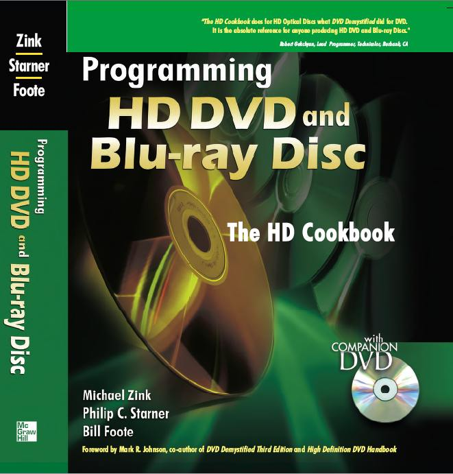
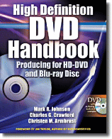

HDCookbook.jovial.com (originally HDCookbook.com)

This website is a home for information related to the
book "Programming HD-DVD and Blu-ray Disc: The HD Cookbook," which
is available
from McGraw-Hill Professional, from
Textbookx.com and from other booksellers. Bulk
pricing information is here. Errata for the HD
cookbook are available here.
Resources for Blu-ray Disc Java and other GEM platforms
|
•
|
|
BD-J HD cookbook open-source project, including frameworks and tools for BD-J and other GEM platforms, and
tools that you can use to create a Blu-ray Disc (provided that you already
have video in the right format).
|
|
|
|
|
HD Handbook
The HD Cookbook is related to the HD Handbook. The HD Handbook
provides information about authoring, design and production of
both Blu-ray Disc and HD-DVD. The HD Cookbook will provide more
in-depth information about authoring, and programming the interactive
layer of each format: HD-DVD Advanced Content, and Blu-ray Disc Java.
See the
McGraw Hill website, or you can buy it
here
and here.
|

|
HD-DVD
Since the book was written, HD-DVD has lost the "format war," but
there's still a lot to be learned from the excellent work that went
into "the other format." Resources for HD-DVD are presented here.